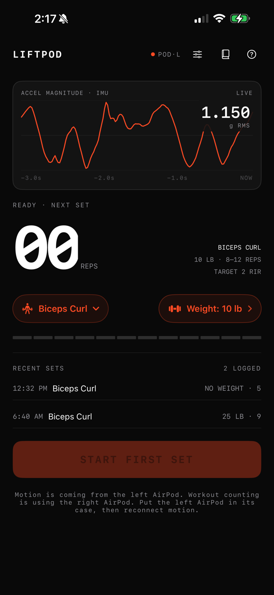

Hackathon project · built with Benton Tameling

A native iPhone workout tracker that turns an AirPod into a rep sensor. Strap the AirPod to a dumbbell and LiftPod streams its IMU over Core Motion, recognizes the exercise, counts reps, groups them into sets, and measures rep speed — then uses the speed decay to estimate reps in reserve, recommend the next set's weight and rest, and generate coaching through a structured-output LLM.
overview
AirPods with head tracking carry a full IMU — acceleration, rotation rate, gravity, and attitude — exposed to apps through CMHeadphoneMotionManager. LiftPod repurposes it: instead of tracking your head, it tracks the weight. No extra hardware, just earbuds most people already own.
We built it as a full on-device iOS app and demoed it live, counting reps on real dumbbell sets. The pipeline turns raw motion into reps and sets, then closes the loop: measured rep-speed decay feeds a reps-in-reserve (RIR) estimate, a next-set load and rest recommendation, and an LLM coach that pre-fills the next set.
signal pipeline
Capture
Raw AirPod motion callbacks flow through a provider abstraction into CaptureModel, which owns ordered event routing and app lifecycle.
Resample & featurize
Irregular callbacks are resampled onto a deterministic 50 Hz timeline and filtered into world-relative acceleration, rotation, and gravity features. Clock gaps, backward timestamps, or orientation failures cut the evidence epoch so a rep can never span missing data.
Detect exercise & count reps
A generic detector learns a 64-frame movement pattern on the fly and authorizes a rep only once coverage, duration, endpoint agreement, and repeatability pass. Alongside it, an experimental exercise mode recognizes 10 dumbbell movements (curls, lateral raises, rows, presses, squats, RDLs, and more) from the IMU stream while counting.
Group into sets
Manual mode uses Start/End Set boundaries. Automatic mode runs one continuous capture: repeated cycles open a set, sustained quiet becomes rest, and a coordinator seals each set once its boundary resolves.
Speed & phase metrics
Per-rep speed comes from a reconstructed 3D path, gated on acceleration bias, endpoint velocity, and displacement closure. After the set, gravity-aligned and PCA cycle proposals are matched to counted reps to split average up vs. down speed.
Estimate effort & coach
The rep-speed trajectory drives RIR estimation, next-set load and rest recommendations, and a structured-output LLM coach — detailed below.
rir from rep speed
Reps in reserve is estimated from how much the lift slows down across a set, following velocity-based-training research (González-Badillo 2017; Jukic 2024).
With no history, loss maps to the percentage of possible reps completed, then to RIR:
p = -0.00855 × loss² + 1.83311 × loss + 5.55281 RIR = completedReps × (100 / p − 1)
When a user confirms a set's final RIR, every earlier rep in that set becomes a labeled example (RIR at rep k = final RIR + total reps − k). New sets are matched against up to 24 prior sets of the same exercise within 25% of the load using a four-feature distance:
d² = (Δloss / 15)² + (log(v_prior / v_now) / 0.35)² + (Δslowdown_per_rep / 5)² + (ΔcompletedReps / 6)² RIR = Σ w·RIR_i / Σ w, w = 1 / (0.25 + d²)
The closest prefix from each prior set is used (up to six sets, at least two required). The personal model is only promoted after leave-one-session-out validation beats the population prior with a mean absolute error of two reps or less; otherwise the app falls back to the prior. Live, the set is flagged as at target once the whole estimated RIR band drops to the user's chosen RIR.
next-set load & rest
Load uses a bounded autoregulation controller adapted from RPE-based programs: when a set lands outside the target zone, the desired change is about 4% of the load per rep of RIR error. That target is then mapped onto real dumbbell increments, searching both the adjacent weight and the rep target, so a 30→35 lb jump (+16.7%) is only suggested when a capacity estimate (reps + RIR, recency-weighted over prior sets) predicts the user still lands in range.
Rest takes the longest of three candidates rather than summing correlated fatigue signals:
RIR candidate = 90s + 30s × max(0, 3 − RIR) + 30s if reps ≥ 12 velocity candidate = 180s at 20% loss → 300s at 40%+ (linear) performance = prior rest × (1 + drop) if capacity fell ≥ 20% rest = max(...), rounded to 10s, capped at 5 min
llm coach
After each set the iPhone calls the OpenAI Responses API directly with a strict JSON schema. Instead of the raw sensor stream, it sends a compact summary — prescription, authoritative rep count, an ordered per-rep array of mean/peak speed and duration, and overall speed degradation — which cut a ten-rep request from about 329 KB to 3.8 KB (98.8% smaller) and brought it under the account's tokens-per-minute limit.
The model returns an estimated completed-set RIR, a short coaching note with per-rep observations, a rest recommendation, and a next-set weight / reps / target RIR that pre-fill the editable next-set fields. The schema itself constrains the answer: weight can only move in valid equipment steps (up to +10 lb or one step down), reps stay in the target range, and observations can only reference reps that were actually recorded. The prompt carries a research context block (rest-interval meta-analyses, RIR–velocity studies) and forbids claims the data can't support, like form errors or joint angles. The API key lives in the iOS Keychain.
recording & replay
Every set is recorded as a replayable bundle — raw Core Motion CSV, ordered processor transactions, resampled frames, and summaries. The same ordered inputs and frozen configuration drive both live processing and replay, and manifests carry hashes so a replay can be verified against the original run. That let us record sets on the phone and iterate on detectors and estimators offline, backed by a suite of 300+ unit and integration tests.
links